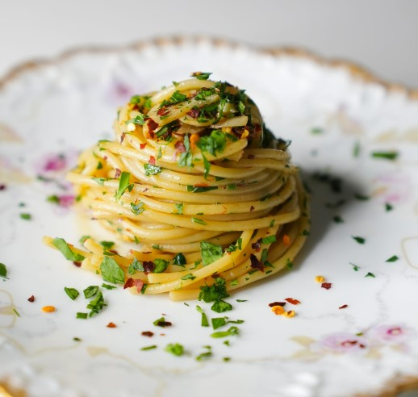

Main Page

Aglo e Olio
250g dried spaghetti (or any other long pasta) 60g extra virgin olive
oil 5 garlic cloves, sliced 1/2 tbsp red chilli flakes chopped parsley,
personal preference
Full cooking time: 20mins
1) Cook dried pasta in a large pot of salted boiling water as per
packaging minus 1 minute. 2) Heat oil over medium high heat. Add garlic
and cook until golden - be careful not to burn it. 3) When pasta is
ready, scoop out 1 cup of pasta cooking water, and drain pasta. 4) Toss
pasta with sauce and pasta cooking water. Toss pasta until sauce
thickens and sticks to pasta (about 1-2 minutes). 5) Toss through
parsley and chilli flakes, season with salt and pepper to taste.